산업안전산업기사 (2010-07-25 기출문제)
1과목: 산업안전관리론
1. 산업안전보건법상 안전보건 · 표지의 종류 중 안내표지에 해당하는 것은?
- 금연
- 몸균형상실 경고
- 안전모 착용
- 녹십자표지
(정답률: 74%)

2. 다음 중 리더십 유형과 의사결정의 관계를 올바르게 연결한 것은?
- 개방적 리더 - 리더 중심
- 개성적 리더 - 종업원 중심
- 민주적 리더 - 전체집단 중심
- 독재적 리더 - 전체집단 중심
(정답률: 89%)
3. 도수율이 0.5, 강도율이 1.5인 사업장의 종합재해지수(FSI)는 약 얼마인가?
- 0.173
- 0.356
- 0.866
- 2.151
(정답률: 65%)
4. 안전점검 체크리스트 작성시 유의해야 할 사항과 관계가 가장 적은 것은?
- 사업장에 적합한 독자적인 내용으로 작성한다.
- 점검 항목은 전문적이면서 간략하게 작성한다.
- 관계의 의견을 통하여 정기적으로 검토·보완 작성한다.
- 위험성이 높고, 긴급을 요하는 순으로 작성한다.
(정답률: 67%)
5. 인간관계 메커니즘 중에서 다른 사람으로부터의 판단이나 행동을 무비판적으로 논리적, 사실적 근거 없이 받아들이는 것을 무엇이라 하는가?
- 모방(imitation)
- 암시(suggestion)
- 투사(projection)
- 동일화(identification)
(정답률: 66%)
6. 산업안전보건법상 자율안전확인 대상 보호구 중 사용 구분에 따른 보안경의 종류에 해당하지 않는 것은?
- 차광보안경
- 유리보안경
- 프라스틱보안경
- 도수렌즈보안경
(정답률: 67%)
7. 기능(기술)교육의 진행방법 중 하버드 학파의 5단계 교수법을 올바르게 나열한 것은?
- 준비 → 교시 → 연합 → 총괄 → 응용
- 준비 → 연합 → 교시 → 응용 → 총괄
- 준비 → 연합 → 총괄 → 응용 → 교시
- 준비 → 응용 → 연합 → 총괄 → 교시
(정답률: 81%)
8. 무재해운동의 실천 기법 중 브레인스토밍(Brainstorming)의 4원칙에 해당하지 않는 것은?
- 본질추구
- 비판금지
- 수정발언
- 대량발언
(정답률: 70%)
9. 다음 중 학습이론에 있어 S-R이론으로 볼 수 없는 것은?
- Pavlov의 조건반사설
- Tolman의 기호 형태설
- Thorndike의 시행착오설
- Skinner의 도구적 조건화설
(정답률: 49%)
10. 착오의 요인 중 인지과정의 착오에 해당하는 것은?
- 정보부족
- 능력부족
- 자기합리화
- 감각차단현상
(정답률: 58%)
11. 산업안전보건법상 사업 내 안전 · 보건교육의 교육과정에 해당하지 않는 것은?
- 정기교육
- 특별교육
- 검사원 양성교육
- 작업내용 변경시의 교육
(정답률: 87%)
12. 다음 중 TWI(Training Within Industry)의 교육내용이 아닌 것은?
- Job Support
- Job Method
- Job Relation
- Job Instruction
(정답률: 69%)
13. 다음 중 알더퍼(Alderfer)의 ERG 이론에 해당하지 않는 것은?
- 생존 욕구
- 관계 욕구
- 안전 욕구
- 성장 욕구
(정답률: 46%)
14. 적응기제(Adjustment Mechanism) 중 방어적 기제(Defence Mechanism)에 해당하는 것은?
- 고립(Isolation)
- 퇴행(Regression)
- 억압(Suppression)
- 보상(Compensation)
(정답률: 74%)
15. 재해예방의 4원칙 중 대책선정의 원칙에서 관리적 대책에 해당되지 않는 것은?
- 각종 규정 및 수칙의 준수
- 동기부여와 사기 향상
- 경영자 및 관리자의 솔선수범
- 안전교육 및 훈련
(정답률: 45%)
16. 다음 중 부주의의 발생원인과 그 대책이 올바르게 연결된 것은?
- 의식의 우회 - 상담
- 소질적 조건 - 교육
- 작업환경조건 불량 - 작업순서 정비
- 작업순서의 부적당 - 작업자 재배치
(정답률: 79%)
17. 산업재해에 의한 직접손실이 연간 5천만원이었다면 산업재해에 의한 총손실비용은 얼마로 추정되겠는가? (단, 하인리히의 재해손실비 산정방법을 적용한다.)
- 1억원
- 2억원
- 2억5천만원
- 5억원
(정답률: 76%)
18. 다음 중 1000명 이상의 대형사업장에 적합하며, 라인의 관리 · 감독자에게도 안전에 관한 책임과 권한이 부여되는 안전관리의 조직은?
- 라인식 조직
- 참모식 조직
- 병렬식 조직
- 직계 참모식 조직
(정답률: 73%)
19. 재해발생의 주요 원인 중 불안전한 상태로 볼 수 있는 것은?
- 불안전한 설계
- 불안전한 자세
- 권한없이 행한 조작
- 위험한 장소에서의 작업
(정답률: 53%)
20. 다음 중 하인리히의 사고예방의 기본 원리 5단계에 해당하지 않는 것은?
- 안전관리 조직
- 사실의 발견
- 시정책의 적용
- 시정책의 검토
(정답률: 49%)
2과목: 인간공학 및 시스템안전공학
21. 인간과 주위와의 열교환 과정을 나타낼 수 있는 열균현 방정식으로 가장 적절한 것은?
- 열축적 = 대사 + 증발 ± 복사 ± 대류 + 일
- 열축적 = 대사 - 증발 ± 복사 ± 대류 - 일
- 열축적 = 대사 ± 증발 - 복사 - 대류 ± 일
- 열축적 = 대사 - 증발 - 복사 + 대류 + 일
(정답률: 63%)
22. FT에 사용되는 기호 중 입력현상이 생긴 후 일정시간이 지속된 때에 출력이 생기는 것을 나타내는 것은?
- 위험지속기호
- 억제 게이트
- OR 게이트
- 배타적 OR 게이트
(정답률: 70%)
23. 다음 중 근골격계질환의 인간공학적 주요 위험요인과 가장 거리가 먼 것은?
- 부적절한 자세
- 다습한 환경
- 무리한 힘
- 단시간 많은 횟수의 반복
(정답률: 88%)
24. 인간 오류의 분류에 있어 원인에 의한 분류 중 작업의 조건이나 작업의 형태 중에서 다른 문제가 생겨 그 때문에 필요한 사항을 실행할 수 없는 오류(error)를 무엇이라고 하는가?
- secondary error
- primary error
- command error
- commission error
(정답률: 63%)
25. 시스템안전분석기법 중 FMEA에 관한 설명으로 옳은 것은?
- 화학설비에 적용하기 위해 개발되었고 전문가와 브레인스토밍 팀을 구성하여 분석한다.
- 휴먼에러와 휴먼에러에 의한 영향을 예견하기 위해 사용되면 HAZOP과 함께 사용할 수 있다.
- 그래픽 모델을 사용하여 분석과정을 가시화시키는 분석방법이며 논리기호를 사용한다.
- 시스템을 구성요소로 나누어 고장의 가능성을 정하고 그 여향을 결정하여 분석하는 방법이다.
(정답률: 73%)
26. 시스템을 가동시키기 시작하면서부터 최초의 고장까지를 평균고장시간이라고 하는데 다음 중 평균고장시간을 나타내는 용어는?
- MTTF
- MTBF
- MTTR
- MTBR
(정답률: 48%)
27. 다음 FT도의 컷셋(cut sets)으로 옳은 것은?
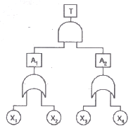
- {X1, X3}, {X1, X4}, {X2, X3}, {X2, X4}
- {X1, X2}, {X1, X3}, {X2, X3}, {X2, X4}
- {X1, X2}, {X1, X3}, {X1, X4}, {X2, X4}
- {X1, X3}, {X1, X4}, {X2, X3}, {X3, X4}
(정답률: 66%)
28. 다음 중 실내면의 추천반사율이 높은 것에서부터 낮은 순으로 올바르게 배열된 것은?
- 바닥 > 가구 > 벽 > 천장
- 바닥 > 벽 > 가구 >천장
- 천장 > 가구 > 벽 > 바닥
- 천장 > 벽 > 가구 >바닥
(정답률: 73%)
29. 다음 중 관측하고자 하는 측정값을 가장 정확하게 읽을 수 있는 표시장치는?
- 묘사적 표시장치
- 상태표시기
- 동침형 표시장치
- 계수형 표시장치
(정답률: 82%)
30. 다음 중 시설배치에 따른 안전성 평가시 검토해야 할 사항으로 적절하지 않은 것은?
- 작업의 흐름에 따라 기계를 배치한다.
- 기계 설비를 통로측에 설치할 수 없을 경우에는 작업자가 통로쪽으로 등을 향하여 일할 수 있도록 한다.
- 기계 설비 주위에 충분한 운전 공간, 보수 점검 공간을 확보한다.
- 공장내외는 안전한 통로를 두어야 하며, 통로는 선을 그어 작업장과 명확히 구별하도록 한다.
(정답률: 85%)
31. 어떤 작업의 평균에너지소비량이 5kcal/min 일 때 1시간 작업시 휴식시간은 약 몇 분이 필요한가? (단, 기초대사를 포함한 작업에 대한 평균에너지 소비량의 상한은 4kcal/min, 휴식시간에 대한 평균에너지소비량은 1.5kcal/min 이다.)
- 15
- 18
- 21
- 24
(정답률: 51%)
32. 다음 중 형상 암호화된 조종 장치에서 단회전용 조종장치로 가장 적절한 것은?
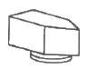
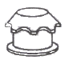
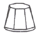
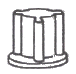
(정답률: 61%)
33. 다음 FT도에서 정상사상 A 의 발생확률은 약 얼마인가? (단, 기본 사상 ➀, ➁ 의 발생확률은 각각 2 × 10-3/h, 3 × 10-2/h 이다.)
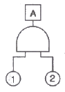
- 6 × 10-5/h
- 5 × 10-5/h
- 5 × 10-6/h
- 6 × 10-6/h
(정답률: 73%)
34. 자극-반응은 조합의 공간, 운동 혹은 개념적 관계가 인간의 기대와 모순되지 않는 것을 무엇이라 하는가?
- 일치성
- 통일성
- 대칭성
- 양립성
(정답률: 65%)
35. 제어장치에서 조종장치의 변위를 3㎝ 움직였을 때 표시 장치의 지침이 5㎝ 움직였다면 이 기기의 C/D는 약 얼마인가?
- 0.25
- 0.6
- 1.5
- 1.67
(정답률: 80%)
36. 다음 중 광원으로부터의 직사휘광을 처리하는 방법으로 적절하지 않은 것은?
- 광원의 휘도를 줄이며 수를 줄인다.
- 광원을 시선에서 멀리 위치한다.
- 휘광원 주위를 밝게 하여 휘도비를 줄인다.
- 가리개, 갓 등을 사용한다.
(정답률: 55%)
37. 다음 중 체계분석 및 설계에 있어서의 인간공학의 가치과 가장 거리가 먼 것은?
- 성능의 향상
- 훈련 비용의 증가
- 사용자의 수용도 향상
- 생산 및 보전의 경제성 증대
(정답률: 84%)
38. 다음 중 체계의 기본기능에 해당하지 않는 것은?
- 감지
- 이동
- 정보보관
- 정보처리 및 의사결정
(정답률: 57%)
39. 앉은 작업자가 특정한 수작업 기능을 편안히 수행할 수 있는 공간의 외곽 한계를 무엇이라 하는가?
- 작업공간포락면
- 파악한계
- 정상작업역
- 최대작업역
(정답률: 44%)
40. 다음 중 시스템안전분석에서 제일 첫 번째 단계의 분석으로 시스템 내의 위험요소가 어떤 상태에 있는가를 정성적으로 분석, 평가하는 위험분석기법은?
- 결함수분석
- 예비위험분석
- 결함위험분석
- 운용위험분석
(정답률: 75%)
3과목: 기계위험방지기술
41. 프레스의 방호장치에 해당되지 않는 것은?
- 손쳐내기(Sweep Guard)식 방호장치
- 수인(Pull Out)식 방호장치
- 가드(Guard)식 방호장치
- 롤 피드(Roll Feed)식 방호장치
(정답률: 74%)
42. 롤러기의 급정지 장치 중 작업자의 무릎으로 조작하는 경우 조작부의 설치위치는?
- 밑면에서 1.8m 이내
- 밑면에서 0.4~0.6m
- 밑면에서 0.6~0.8m
- 밑면에서 0.8~1.1m
(정답률: 71%)
43. 선반에서 절삭 중 칩을 자동적으로 끊어 주는 바이트에 설치된 안전장치는?
- 커버
- 방진구
- 보안경
- 칩 브레이커
(정답률: 84%)
44. 산업안전기분에 따르면 가스집합용접장치의 배관시에 있어서 하나의 취관에 대하여 설치해야 할 안전기는 최소 몇 개 이상인가?
- 1개
- 2개
- 3개
- 5개
(정답률: 62%)
45. 일반적으로 기계설계시 적용하는 안전율 계산으로 맞는 것은?
- 안전하중 ÷ 설계하중
- 최대사용하중 ÷ 극한강도
- 극한강도 ÷ 최대설계응력
- 극한강도 ÷ 파단하중
(정답률: 54%)
46. 기계의 동작 상태가 설정한 순서, 조건에 따라 진행되어 한 가지 상태의 종료가 끝난 다음 상태를 생성하는 제어 시스템을 가진 로봇은?
- 시퀀스 로봇
- 플레이백 로봇
- 수치제어 로봇
- 학습제어 로봇
(정답률: 79%)
47. 달기체인(chain)의 신장율 체크사항 중 사용금지 기준으로 올바른 것은?
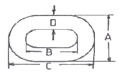
- A의 폭에 대하여 3% 변화
- B의 길이에 대하여 5% 변화
- C의 길이에 대하여 1% 변화
- D의 지름에 대하여 7% 변화
(정답률: 55%)
48. 정(chisel) 작업의 일반적인 안전수칙으로 잘못된 것은?
- 따내기 및 칩이 튀는 가공에서는 보안경을 착용하여야 한다.
- 절단 작업 시 절단된 끝이 튀는 것을 조심하여야 한다.
- 작업을 시작할 때는 가급적 정을 세게 타격하고 점차 힘을 줄여간다.
- 절단이 끝날 무렵에는 정을 세게 타격 해서는 안된다.
(정답률: 86%)
49. 사업주는 크레인의 하중 시험을 실시한 경우 그 결과를 몇 년간 보존해야 하는가?
- 6개월
- 1년
- 2년
- 3년
(정답률: 56%)
50. 클러치 프레스에 부착된 양수조작식 방호장치에 있어서 클러치 맞물림 개소수가 4군데, 매분 행정수가 300 SPM 일 때 양수조작식 조작부의 최소 안전거리는? (단, 인간의 손의 기준 속도는 1.6 m/s로 한다.)
- 360mm
- 260mm
- 240mm
- 340mm
(정답률: 51%)
51. 롤러의 위험점 앞에 개구간격 18mm의 가드를 설치하는 경우 위험점에서 가드까지의 최단 거리는? (단, 위험점이 전동체는 아니다.)
- 20mm
- 60mm
- 80mm
- 160mm
(정답률: 53%)
52. 기계의 원동기, 회전축 및 체인 등 근로자에게 위험을 미칠 우려가 있는 부위에 설치해야 하는 위험방지 장치로 적합하지 않는 것은?
- 덮개
- 건널다리
- 클러치
- 슬리브
(정답률: 48%)
53. 와이어로프의 절단하중이 1116kgf이고, 한 줄로 물건을 매달고자 할 때 안전계수를 6으로 하면 몇 kgf 이하의 물건을 매달 수 있는가?
- 186
- 192
- 198
- 212
(정답률: 83%)
54. 지게차의 안전장치에 해당하지 않는 것은?
- 백미러
- 후방접근 경보장치
- 백 레스트
- 권과방지장치
(정답률: 74%)
55. 밀링머신(milling machine)의 작업 시 안전수칙에 대한 설명으로 틀린 것은?
- 커터의 교환 시는 테이블 위에 목재를 받쳐 놓는다.
- 강렬절삭 시에는 일감을 바이스에 깊게 물린다.
- 작업 중 면장갑은 끼지 않는다.
- 커터는 가능한 컬럼(colum)으로부터 멀리 설치한다.
(정답률: 74%)
56. 드럼의 직경이 D, 로프의 직경이 d 인 윈치에서 D/d 가 클수록 로프의 수명은 어떻게 되는가?
- 짧아진다.
- 길어진다.
- 변화가 없다.
- 사용할 수 없다.
(정답률: 63%)
57. 연삭기 숫돌차의 바깥지름이 250mm라면 평형플랜지의 바깥지름은 약 몇 mm 이상이어야 하나?
- 62mm
- 84mm
- 93mm
- 114mm
(정답률: 76%)
58. 다음 ( ) 안에 들어갈 말로 옳은 것은?
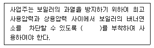
- 고저수위조절장치
- 압력방출장치
- 압력제한스위치
- 비상정지장치
(정답률: 66%)
59. 아세틸렌 용접장치의 역화 원인으로 거리가 먼 것은?
- 토치 팁에 이물질이 묻었을 때
- 팁이 과열되었을 때
- 산소 공급이 부족 할 때
- 압력 조정기가 고장일 때
(정답률: 77%)
60. 지게차의 헤드가드 설치 기준에 대한 설명으로 틀린 것은?(2022년 02월 15일 확인된 규정 적용 및 보기 변경됨)
- 강도는 지게차 최대하중의 2배의 값(4톤 초과시는 4통으로 한다)의 등분포 정하중에 견딜 수 있는 것일 것
- 상부틀의 각 개구의 폭 또는 길이가 16㎝ 미만일 것
- 운전자가 앉아서 조작하는 경우 운전자 좌석의 상면에서 헤드가드의 상부틀 하면까지의 높이가 0.903m 이상일 것
- 운전자가 서서 조작하는 경우 운전석의 바닥면에서 헤드가드의 상부틀 하면까지의 높이가 2.5m 이상일 것
(정답률: 62%)
4과목: 전기 및 화학설비위험방지기술
61. 파이프 등에 유체가 흐를 때 발생하는 유동대전에 가장 큰 여향을 미치는 요인은?
- 유체의 이동거리
- 유체의 점도
- 유체의 속도
- 유체의 양
(정답률: 79%)
62. 메탄 20vol%, 에탄 25vol%, 프로판 55vol% 의 조성을 가진 혼합가스의 폭발하한계 값(vol%)은 약 얼마인가? (단, 메탄, 에탄 및 프로판가스의 폭발하한값은 각각 5vol%, 3vol%, 2vol% 이다.)
- 2.51
- 3.12
- 4.26
- 5.22
(정답률: 55%)
63. 가정에서 요리를 할 때 사용하는 가스렌지에서 일어나는 가스의 연소형태에 해당되는 것은?
- 증발연소
- 분해연소
- 표면연소
- 확산연소
(정답률: 67%)
64. 폭발범위에 있는 가연성 가스 혼합물에 전압을 변화시키며 전기 불꽃을 주었더니 1000V 가 되는 순간 폭발이 일어났다. 이때 사용한 전기불꽃의 콘덴서 용량은 0.1㎌ 을 사용하였다면 이 가스에 대한 최소 발화에너지는 몇 mJ 인가?
- 5
- 10
- 50
- 100
(정답률: 44%)
65. 유해물질의 농도를 c, 노출시간을 t 라 할 때 유해물지수(k)와의 관계인 Haber의 법칙을 올바르게 나타낸 것은?
- k=c+t
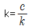
- k=c×t
- k=c-t
(정답률: 72%)
66. 다음 중 심실세동을 일으키는 요소와 가장 관계가 적은 것은?
- 전류의 크기
- 통전시간
- 체중
- 신장(키)
(정답률: 57%)
67. 전기사용 장소의 사용전압이 440V 인 저압 전로의 전선 상호간 및 전로와 대지 사이의 절연저항은 얼마 이상이어야 하는가?(오류 신고가 접수된 문제입니다. 반드시 정답과 해설을 확인하시기 바랍니다.)
- 0.1MΩ
- 0.4MΩ
- 0.5MΩ
- 1.0MΩ
(정답률: 73%)
68. 다음 중 이산화탄소 소화기의 사용이 가능한 것은?
- 전기설비가 존재하는 한랭한 지역에서의 화재
- 사람이 존재하는 밀폐된 지역에서의 화재
- LiH, NaH와 같은 금속수소화물에 의한 화재
- 제5류 위험물(자기 반응성 물질)에 의한 화재
(정답률: 64%)
69. 다음 중 전기화재의 원인에 관한 설명으로 가장 거리가 먼 것은?
- 전류에 의해 발생되는 열은 전류의 제곱에 비례하고, 저항에 비례한다.
- 단락된 순간의 전류는 정격전류보다 크다.
- 전기화재의 발화형태별 원인 중 가장 큰 비율을 차지하는 것은 전기배선의 단락이다.
- 누전, 접촉불량 등에 의한 전기화재는 배선용차단기나 누전차단기로 예방이 가능하다.
(정답률: 45%)
70. 인체의 저항이 500Ω 이고, 440V 회로에 누전차단기(ELB)를 설치할 경우 다음 중 가장 적당한 누전차단기는?
- 30mA, 0.1초에 작동
- 30mA, 0.03초에 작동
- 15mA, 0.1초에 작동
- 15mA, 0.03초에 작동
(정답률: 74%)
71. 다음 중 일반적인 국소배기장치의 구성 요소로 볼 수 없는 것은?
- 후드
- 저장소
- 덕트
- 송풍기
(정답률: 66%)
72. 다음 중 증류탑의 일상 점검항목으로 볼 수 없는 것은?
- 도장의 상태
- 트레이(Tray)의 부식상태
- 보온재, 보냉재의 파손여부
- 접속부, 맨홀부 및 용접부에서의 외부 누출유무
(정답률: 62%)
73. 다음 중 산업안전보건법상 물질안전보건자료(MSDS) 작성시 포함되어야 하는 항목이 아닌 것은? (단, 참고사항은 제외한다.)
- 화학제품과 회사에 관한 정보
- 제조일자 및 유효기간
- 운송에 필요한 정보
- 환경에 미치는 영향
(정답률: 39%)
74. 다음 중 물체에 발생한 정전기의 제거방법으로 적절하지 않은 것은?
- 습기 부여
- 자외선의 공급
- 금속부분의 접지
- 정전기방지용 도장
(정답률: 78%)
75. 고저압 혼촉방지를 위해 변압기의 2차측(저압측)에 시설하는 접지공사의 종류와 접지저항의 최대값으로 옳은 것은? (단, 최대 1선 지락전류는 2Ω 이다.)(관련 규정 개정전 문제로 여기서는 기존 정답인 2번을 누르면 정답 처리됩니다. 자세한 내용은 해설을 참고하세요.)
- 제1종 접지공사. 10[Ω]
- 제2종 접지공사. 75[Ω]
- 제3종 접지공사. 100[Ω]
- 특별 제3종 접지공사. 10[Ω]
(정답률: 60%)
76. 다음 중 독성가스의 발생으로 화재에 사용할 수 없는 할로겐화합물 소화약제는?
- 할론 1211 소화약제
- 할론 1301 소화약제
- 할론 2402 소화약제
- 할론 104 소화약제
(정답률: 53%)
77. 다음 중 인체의 접촉상태에 따른 허용접촉전압이 잘못 연결된 것은?
- 인체의 대부분이 수중에 있는 상태 : 2.5V 이하
- 인체가 현저하게 젖어 있는 상태 : 25V 이하
- 금속성의 전기기계장치나 구조물에 인체의 일부가 상시 접촉되어 있는 상태 : 50V 이하
- 접촉전압이 가해질 우려가 없는 경우 : 제한없음
(정답률: 64%)
78. 다음 중 물과의 접촉을 금지하여야 하는 물질은?
- 황린
- 칼슘
- 히드라진
- 니트로셀룰로오스
(정답률: 71%)
79. 위험장소의 분류에 있어 다음 설명에 해당하는 것은?
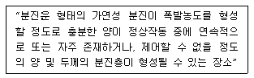
- 0종 장소
- 20종 장소
- 1종 장소
- 21종 장소
(정답률: 63%)
80. 다음 중 방폭구조의 종류와 기호를 올바르게 나타낸 것은?
- 몰드방폭구조 : n
- 안전증방폭구조 : e
- 충전방폭구조 : p
- 압력방폭구조 : o
(정답률: 71%)
5과목: 건설안전기술
81. 다음 중 지반에 따른 굴착면의 기울기로 옳지 않은 것은?(2021년 11월 19일 개정된 규정 적용됨)
- 경암 - 1 : 0.5
- 연암 -1: 1.0
- 습지 - 1 : 1.5
- 건지 - 1 : 1.5
(정답률: 48%)
82. 다음 중 쇼벨계 굴착기계가 아닌 것은?
- 크림쉘
- 백호우
- 드래그 라인
- 스크레이퍼
(정답률: 66%)
83. 다음 산업안전기준에 관한 규칙에서 ( )안에 알맞은 것은?
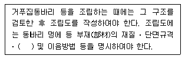
- 부재강도
- 기울기
- 안전대책
- 설치간격
(정답률: 70%)
84. 옹벽 축조를 위한 굴착작업에 대한 다음 설명 중 옳지 않은 것은?
- 수평 방향으로 연속적으로 시공한다.
- 하나의 구간을 굴착하면 방치하지 말고 기초 및 본체구조물 축조를 마무리 한다.
- 절취경사면에 전석, 낙석의 우려가 있고 혹은 장기간 방치할 경우에는 숏크리트, 록볼트, 캔버스 및 모르타르 등으로 방호한다.
- 작업위치의 좌우에 만일의 경우에 대비한 대피통로를 확보하여 둔다.
(정답률: 77%)
85. 토석붕괴의 요인 중 외적 요인이 아닌 것은?
- 토석의 강도저하
- 사면, 법면의 경사 및 기울기의 증가
- 절토 및 성토 높이의 증가
- 공사에 의한 진동 및 반복하중의 증가
(정답률: 68%)
86. 다음 터널 공법 중 전단면 기계 굴착에 의한 공법에 속하는 것은?
- ASSM(American Steel Supported Method)
- NATM(New Austrian Tunneling Method)
- TBM(Tunnel Boring Machine)
- 개착식 공법
(정답률: 66%)
87. 공사용 가설도로의 일반적으로 허용되는 최고 경사도는 얼마인가?
- 5%
- 10%
- 20%
- 30%
(정답률: 49%)
88. 다음 중 굴착기의 전부장치에 해당하지 않는 것은?
- 붐(Boom)
- 암(Arm)
- 버킷(Bucket)
- 블레이드(Blade)
(정답률: 71%)
89. 다음 중 흙의 다짐에 대한 목적 및 효과로 옳지 않은 것은?
- 흙의 밀도가 높아진다.
- 흙의 투수성이 증가한다.
- 지반의 지지력이 증가한다.
- 동상현상이나 팽창작용 등이 감소한다.
(정답률: 67%)
90. 강관비계의 최고부 높이가 50m인 경우 기둥하부로부터 몇 m 높이까지 비계기둥 좌굴 등의 방지를 위하여 강관을 2본으로 묶어 세워야 하는가?(오류 신고가 접수된 문제입니다. 반드시 정답과 해설을 확인하시기 바랍니다.)
- 8m
- 15m
- 19m
- 31m
(정답률: 39%)
91. 다음 ( )안에 적합한 것은?(오류 신고가 접수된 문제입니다. 반드시 정답과 해설을 확인하시기 바랍니다.)
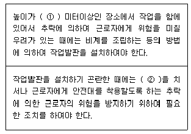
- ① : 2, ② : 낙하물방지망
- ① : 2, ② : 안전방망
- ① : 3, ② : 추락방지망
- ① : 3, ② : 방호선반
(정답률: 52%)
92. 건축물의 층고가 높아지면서, 현장에서 고소작업대의 사용이 증가하고 있다. 고소작업대의 사용 및 설치기준에 대한 사항 중 옳은 것은?
- 작업대를 와이어로프로 상승 또는 하강시킬 때에는 와이어로프의 안전율은 10 이상일 것
- 작업대를 상승시킨 상태에서 항상 작업자를 태우고 이동할 것
- 바닥과 고소작업대는 가능한 한 수직을 유지하도록 할 것
- 갑작스러운 이동을 방지하기 위하여 아웃트리거(outrigger) 또는 브레이크 등을 확실히 사용할 것
(정답률: 57%)
93. 시추코어 중 100mm 이상 되는 코어편 길이의 합을 시추길이로 나누어 백분율로 표시한 값으로 암질의 상태를 나타내는 데 사용되는 것은?
- 탄성파 속도
- R.Q.D(Rock Quality Designation)
- R.M.R(Rock Mass Rating)
- 일축 압축강도
(정답률: 52%)
94. 비계발판용 목재의 강도상의 결점에 대한 조사기준으로 옳지 않은 것은?
- 발판의 폭과 동일한 길이 내에 결점 치수의 총합이 발판폭의 1/4을 초과하지 않을 것
- 결점 개개의 크기가 발판의 중앙부에 있는 경우 발판폭의 1/5을 초과하지 않을 것
- 발판의 갈라짐은 발판폭의 1/3을 초과하지 않을 것
- 발판의 갈라짐은 철선, 띠철로 감아서 보존할 것
(정답률: 29%)
95. 강관비계의 구조에서 비계기둥간의 적재하중은 몇 kg을 초과할 수 없는가?
- 500 kg
- 450 kg
- 400 kg
- 350 kg
(정답률: 69%)
96. 건설공사에서 굴착경사면을 점검 하던 중 발생한 토사붕괴의 원인으로 가장 거리가 먼 것은?
- 보통흙 습지의 굴착면 기울기를 1: 0.8로 하였다.
- 굴착부 상단부에 철근을 일부 적재하였다.
- 굴착면에 유입수가 발생하였다.
- 동절기의 흙이 결빙되어 있었다.
(정답률: 46%)
97. 다음 중 철골보 인양작업시의 준수사항으로 옳지 않은 것은?
- 인양용 와이어로프의 체결지점은 수평부재의 1/4지점을 기준으로 한다.
- 인양용 와이어로프의 매달기 각도는 양변 60° 를 기준으로 한다.
- 흔들리거나 선회하지 않도록 유도 로프로 유도한다.
- 후크는 용접의 경우 용접규격을 반드시 확인한다.
(정답률: 64%)
98. 공사현장에서 낙하물방지망 또는 방호선반을 설치할 때 설치높이 및 벽면으로부터 내민 길이 기준으로 옳은 것은?
- 설치높이 : 10m 이내마다, 내민 길이 2m 이상
- 설치높이 : 15m 이내마다, 내민 길이 3m 이상
- 설치높이 : 10m 이내마다, 내민 길이 3m 이상
- 설치높이 : 15m 이내마다, 내민 길이 2m 이상
(정답률: 66%)
99. 다음 중 공사현장에서 철골을 세우기 위한 건설기계에 해당하지 않는 것은?
- 타워 크레인
- 진 폴
- 가이 데릭
- 항발기
(정답률: 67%)
100. 굴착작업을 실시하기 전에 조사하여야 할 사항 중 지하매설물에 해당하지 않는 것은?
- 가스관
- 상하수도관
- 암반
- 건축물의 기초
(정답률: 47%)